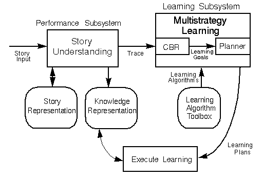
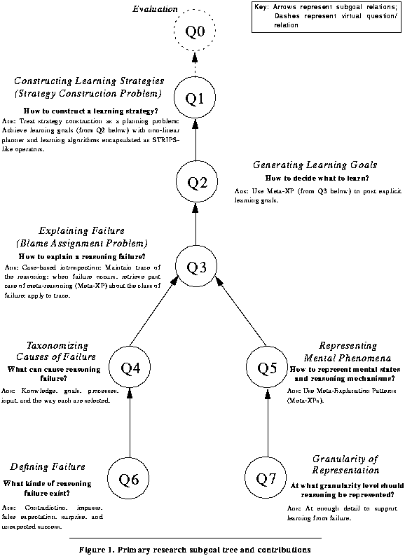
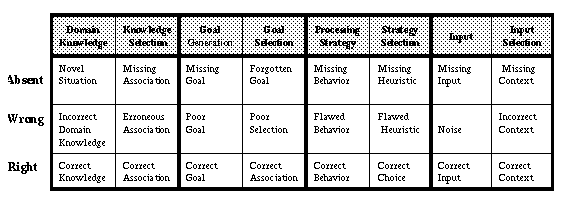
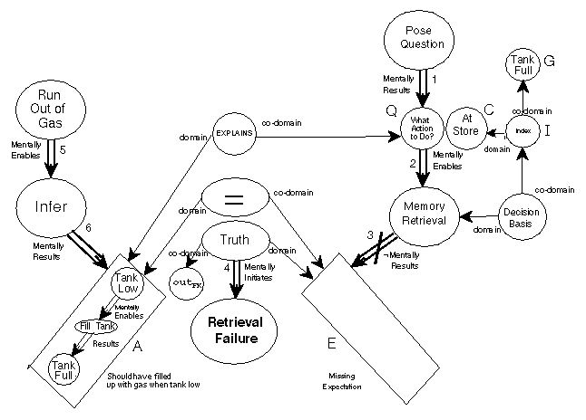

Table of Contents
Table of Contents
 Previous Chapter
Previous Chapter
Table of Contents
Previous Chapter
This research investigates goal-driven learning by specifying a computational model of introspective multistrategy learning (IML). The theory concerns introspection because learning in the model depends on the ability of the learner to reason about internal reasoning processes and mental states. To do this, a system must represent its knowledge about its own reasoning explicitly and declaratively in a tangible knowledge structure so that it can examine and manipulate it. It is a multistrategy theory because it is intended to integrate a wide variety of learning methods in a uniform manner. The specific focus of the research is on the learning-strategy construction problem. That is, given some computational performance task specified by the system's goals, context and some input, if a failure occurs during the task, the problem is to construct a learning strategy with which to repair the faulty components of the system. The solution to this problem is a hybrid model having two phases. In the event of a reasoning failure, the first phase uses case-based methods to retrieve declarative meta-explanation structures that support self-reflective blame assignment of the reasoning failure and that assist in the generation of a set of learning goals. Learning goals are necessary to mediate between the explanation of failure and the learning needed to avoid the failure in the future. Given such learning goals, the second phase of the model uses a non-linear planner to construct a partially ordered sequence of calls to specific learning algorithms to achieve the goals. The model implementation, called Meta-AQUA, illustrates our solution to the problem of selecting a learning algorithm in machine learning contexts. It is also used to simulate the learning performed by humans during complex reasoning tasks.
An intelligent agent learns from its mistakes; a fool is doomed to repeat them. Thus, if one wants to understand intelligence, it is important to understand learning. Moreover, if one wishes to build either intelligent devices or models of intelligent agents, it is also important to give these systems the ability to learn from their experience, especially failed experiences, so that they can improve their performance over time and avoid repetition of failures. A system designer cannot hope to incorporate ab initio all the knowledge necessary for a nontrivial intelligent system, so learning provides a way to acquire or extend knowledge incrementally over time. Even supposing all knowledge could be incorporated into a system by some knowledge engineer, engineers occasionally make mistakes. Thus, learning will be required in order to detect and remove inconsistencies in the knowledge. Furthermore, even if a system has an exhaustively complete and consistent knowledge base, the world is dynamically changing. The system would therefore have to adjust its knowledge, otherwise it would soon become obsolete. But, beyond these engineering arguments, we are interested in understanding and building models of learning in order to discover a little bit about ourselves: about how we cope with mountains of information; about how we detect and retract mistaken assumptions and incorrect beliefs; and about how we adapt to the constantly changing world that surrounds us. Given this complex state of affairs, how can one best view the learning needed to institute these kinds of changes?
Consider, for example, a student trying to learn to program in the language LISP. Typically, one of the most difficult lessons to master is the concept of recursion. Despite having mastered the separate features of a programming language, when attempting to program a recursive function that incorporates known operations, students often fail. When a programming bug occurs, the student must both learn what went wrong with the specific recursive problem (i.e., recover from the current bug) and generalize and refine the concept of recursion (i.e., repair the student's knowledge so that bugs will not repeat in similar recursive problems). The student has a number of choices to perform these learning tasks. The student may return to a previous example, may re-read the textual instructions, may reflect over the problem solving that preceded the failure, or simply continue to the next problem with the hope that further problem solving will illustrate the proper method of solving such examples (Pirolli & Recker, 1994). Which strategy to use is a crucial decision that bears on the effectiveness of learning and thus the subsequent performance of the programmer.
To endow a machine with a similar strategic ability to learn, one might allow it to select a method from some library of learning algorithms when it makes reasoning errors during its performance task. For example, if a machine is designed to read simple stories, it might make mistakes when trying to understand the sentences in a story or when attempting to predict the actions or motivations of characters in a story. If it has read numerous stories about terrorism, it may use past cases of terrorist smuggling to understand an analogous story about drug smuggling. Yet its knowledge about events in the new story may be incomplete or incorrect. When it reads about dogs that bark at suspicious luggage, it should be able to predict that the dog is barking in order to signal the presence of contraband. But if it does not have such knowledge, then it needs to be able to acquire experience about these events by creating a knowledge acquisition strategy consisting of various calls to routines in its library. Even if it has relevant cases, however, it may not actually be able to retrieve an appropriate case in a given situation while reading new stories. When it discovers this lack, it must be able to adjust the organization of its knowledge by constructing a memory reindexing strategy. IML theory directly addresses this problem of deliberately constructing a strategy with which to learn given some failure in its performance task.
When confronted by failure, a strategic learner must know what caused the failure and explain what went wrong in order to know what needs to be learned. Yet, the number of events that can mishap is immense. Therefore, an agent must not only decide on a strategy to learn, but first, the agent must sift through a large number of explanations that may account for any given failure. For instance, consider the Walnut Cove cartoon in Figure 6.
Figure 6. Andrew's
failure
(Reprinted with special permission of King Features Syndicate)
In this cartoon, Andrew's brother sneaks into his bedroom to wake him. He starts to scream that since it is already 8 o'clock in the morning Andrew will be late for school if he does not get ready quickly. As they run down the stairs, Andrew is asked whether or not he is forgetting anything important, to which he replies that he believes so. With a bit more thought, Andrew decides that he has definitely forgotten something, but he still cannot recall what it might be. Finally, as Andrew tries to clear his head at the bus stop, we discover Andrew's problem. It is Sunday, so the bus is not in service.
Waiting outside, Andrew will probably be wondering why the bus is late. To explain the bus's failure to arrive on time, Andrew might reason about the physical operation of the bus from some naïve model of automobiles and engines. He might conclude that the driver ran out of gas either because of a hole in the gas tank or because of some other mechanical failure. As this cartoon illustrates, however, the real problem is with Andrew's memory system, rather than with the bus's engine system. But, his memory is not the only causal factor that bears on his mistake. A major contribution to his memory problem was caused by his brother. By providing misinformation ("you're going to be late for school"), his brother gave him the wrong context from which to reason initially. Finally, Andrew seriously needs to consider his goals. The main problem is that Andrew is pursuing an inappropriate goal given his circumstances.
We see that the causes of failure may come from many sources; not only will failure occur from physical sources in the world, but Andrew must be able to look within himself to consider additional factors such as his own knowledge, memory, inferences, input, context and goals. Andrew does start to consider this; it is significant that Andrew knew that he was forgetting something, even though he could not remember what it was. Only after he knows what went wrong can Andrew learn not to repeat this mistake, perhaps by not trusting his brother when he first wakes up in the morning, or perhaps by evaluating his goals more carefully.
These types of learning problems are ubiquitous. They confront not only the reasoner who tries to solve problems in some world, such as Andrew trying to decide his morning activities, but also agents trying to understand other agents like themselves. For example, in order for a reader of Walnut Cove to fully comprehend the cartoon's story, the agent must be able to understand Andrew's failure in terms of the mental events within Andrew, not simply the physical events drawn within the strip. Moreover, not only must readers be attuned to factors that affect failures performed by the characters of a story, but in order to improve their reading skills, readers must also be able to reason about their own comprehension failures when they incorrectly predict the twists and turns of a story. In both problem-solving tasks like daily planning and comprehension tasks like story understanding, a reasoner must be able to explain reasoning failure in order to construct some coherent strategy with which to learn.
Simply stated, and in the narrowest sense, the central problem addressed by this research is the learning-strategy construction problem (Cox & Ram, 1991), particularly, in failure-driven learning. That is, given some goal-specific performance task (e.g., story understanding or problem solving), a context and some input, if a failure occurs during the task, the computational learning problem is to choose or construct a learning strategy with which to repair the background knowledge of the system.(1) The knowledge is considered repaired if, given a similar future situation, the failure will not recur. Yet, as seen in the previous section, the problem is not a simple one. In order to fix the knowledge effectively, the learner must first understand both the knowledge it is fixing and the error that gave rise to the need to learn. Since failure often is caused by faulty reasoning, the learner must be able to represent, examine, and reason about its own reasoning. In the broadest sense, then, this thesis attempts to carve out a theory of introspection and self-understanding.
Yet, it is not immediately apparent why introspection is necessary, or even desirable, in many cases. Introspection has the distinct disadvantage of considerable computational overhead. Furthermore, it is a well-founded fact that the veracity of human introspection is very limited.(2) In general, however, adding introspection to a machine allows it to have an idea of what it is doing and why. A machine applying deductive theorem-proving certainly does not understand mathematics in the same manner that a mathematician does. Because no model of the problem-solving process exists in an automatic theorem prover, the machine does not understand theorem proving even though it can perform it. We do not claim that introspection is a computational panacea; rather, this research investigates the role of introspection when constructing a learning strategy and the contingencies under which it is beneficial.
The problem of strategy construction is quite challenging because to construct a strategy, a system needs to know specifically what is supposed to be learned; to decide what needs to be learned, it must know the cause of failure; and to determine the full cause of the failure, it must be able to reflect upon its own reasoning. Thus, three major problems exist when facing a reasoning failure (Ram & Cox, 1994): blame assignment, deciding what to learn, and strategy construction. Figure 7 illustrates the relationships between these problems in graphical form. As will be explained shortly, the first two are case-based reasoning problems, whereas the third is a non-linear planning problem.
Figure 7. Decomposition of the learning problem
From a machine learning perspective, serious obstacles exist when confronting the strategy construction problem. Many learning algorithms have been developed in the past thirty years of machine learning research, so there may be many options and algorithms from which to choose. Under the rubric of multistrategy learning research (e.g., Michalski & Tecuci, 1994), recent trends aim at incorporating the multiplicity of algorithms into a cohesive whole in which multiple strategies can be combined to tackle complex learning problems. In the current state of the art in machine learning research, however, humans analyze characteristic performance parameters (i.e., the particular input context and distribution of learning problems) and then decide what algorithms or combination of algorithms are best suited to the data. A major goal of this research is to begin to automate this process. The wish is to give machines a library of learning methods and have them independently decide which should be used to fix the problems that inevitably occur.
As indicated by the problems facing novice LISP programmers discussed in Section 1.1, there is also a cognitive science interpretation to this problem. Rather than merely formulating a method by which to engineer the machine learning problems in strategy construction, we are interested in developing a model that applies to humans engaged in deliberation over learning choices. Considering known human limitations from the psychological literature imposes realistic constraints on the model. The resulting cognitive model is not always easy to separate from the machine learning model, but we will attempt to draw some specific predictions from the model that suggest testable hypotheses for the psychological community. We also will have to deal with the well-known philosophical and psychological problem of distinguishing between cognition and metacognition. Finally, although we do not claim that the algorithms and representations used by the computational model actually exist within the head of an individual, IML theory provides an explicit computational model of metacognitive behavior and deliberate learning.
The goal of integrating multiple learning algorithms is a daunting one, since it is an open question as how best to combine often conflicting learning-mechanisms. This research examines the metaphor of goal-driven planning as a tool for performing this integration. Learning is thus viewed as solving a planning problem (Cox & Ram, 1995; Hunter, 1990b; Ram & Hunter, 1992; Ram & Leake, 1995). By maintaining a declarative trace of reasoning that supports a particular choice of performance goals or plans, retrieving past cases of meta-reasoning that can explain the reasoning failure, and then directly inspecting and manipulating such explanations, an intelligent system can generate explicit learning goals that constitute desired knowledge changes.(3) A plan is subsequently assembled by choosing learning algorithms from the system's repertoire and ordering them in an appropriate way so that the learning goals are achieved.
The theory presented in this work is interesting because the choice of algorithm is not simply a function of the input, where the input is some set of assertions about the world, or even a faulty solution tree. Instead, since the input to the learner represents a trace or declarative representation of the prior reasoning that produced the solution, the choice of a learning strategy is a function of the reasoning that produced the error.(4) A solution plan is usually a structured set of physical operations that institutes changes in the world, such as chess moves that modify an external board position; in contrast, a reasoning trace is a structured set of mental operations that produces internal changes of mental states, selects problem operators, and eventually results in objects like solution plans. Thus, to decide on a choice of learning strategies, our theory of learning depends on introspection of the mental world, as much as it depends on an analysis of both the problem and the solution in the external world. In contrast, systems that make decisions based on a solution alone have only an indirect relationship to the actual causes of the failure.
This dissertation illustrates these problems and solutions within the context of a theory of introspective multistrategy learning with an implemented learning system called Meta-AQUA. The system learns by choosing a learning strategy on the basis of introspective explanations of its own performance failures. The performance task for Meta-AQUA is story understanding. That is, given a stream of concepts as the representation for a story sequence, the task is to create a causally connected conceptual interpretation of the story. As described in the previous section (on page 8), if the system fails at the task, its subsequent learning tasks are (1) blame assignment - explain the failure; (2) decide what to learn - form a set of explicit learning goals; and then (3) learning-strategy construction - construct a learning plan to achieve these goals.
As illustrated in Figure 8, the implementation of the solution to the above tasks has two parts. The system maintains a declarative trace of reasoning that leads to or supports a particular choice of goals or plans. Then, given a reasoning failure, the case-based reasoning (CBR) half of the learning subsystem retrieves past cases of introspective reasoning that support reflective blame assignment of the reasoning failure and that assist in the generation of a set of learning goals. Given such learning goals (representing desired changes in the system's background knowledge), the second part of the learning system is a nonlinear planner that constructs a partially ordered sequence of calls to different learning algorithms. Figure 7 on page 9 also shows this bipartite structure of the model.
 Figure 8. Basic Meta-AQUA system architecture
One of the key contributions of this thesis is a representational structure called a meta-explanation pattern (Meta-XP) (Cox, 1991; Cox & Ram, 1991; Ram & Cox, 1994). The structures can represent how an explanation is created (i.e., record the reasoning that generates an ordinary explanation), and they can represent causal patterns that explain why explanations fail (i.e., capture past cases of meta-reasoning about failure). In IML theory, the notion of a Meta-XP has been extended to represent performance failure in general, not just explanation failures.
A key construct in the solution to the strategy construction problem is the idea of a learning goal (Cox & Ram, 1994a; Ram, 1990; 1991; Ram & Hunter, 1992; Ram & Leake, 1995). Rather than specifying a desired state of the world, a learning goal represents a desired state of knowledge. A prototypical example of a learning goal is a question, the answer to which represents the achievement of the goal. A major hypothesis of this dissertation is that learning goals are necessary in order to mediate between the explanation of failure and the learning needed to avoid the failure; a direct mapping is not sufficient in all cases. Many case-based reasoning systems use the direct indexing of repairs by indexes that represent the conditions under which they are appropriate. This thesis will demonstrate that such linkage may lead to incorrect results when the chosen learning methods interact. Researchers cannot assume the learning algorithms are independent. Just as planning goals assist in alleviating the problems of interacting planning steps (i.e., paining a ladder and painting a ceiling; see Sussman, 1975 for an early discussion), learning goals can solve the problems of interacting learning strategies.
Although the Meta-AQUA system implements a performance module that conducts story understanding, the dissertation is not about story understanding or the comprehension process itself. The performance module is therefore quite simple. Likewise, although Meta-AQUA contains an indexed dynamic-memory module, no results will be reported on memory issues. Moreover, even the learning algorithms contained in Meta-AQUA's library are simplified reconstructions of well-known methods. This work does not contribute new learning methods per se; rather, it presents a new methodology for dynamically combining standard learning methods so that larger learning problems may be solved than those upon which individual learning algorithms were designed to operate.(5) The work is not concerned with first-order reasoning as much as it is concerned with the second-order reasoning required to learn deliberately. Thus, the research contributions are to be found in the representations used to model the mental world and the methods used to manipulate them, not in Meta-AQUA's first-order story-understanding performance.
The research presented in this document arose from the pursuit of a simple question: Given a library of learning algorithms, how can one build an appropriate strategy with which to repair a system that has failed during its performance task? Originally, the task of answering the strategy-construction question appeared to be straightforward and rather direct. The goal of solving this problem became quite complex, however, because in order to answer the question a number of sub-questions arose. Each of these questions had to be answered in order to answer the main question, and many of these questions had further sub-questions that demanded answers.
The pursuit of this research question also illustrates the notion of a learning goal, one of the key concepts of this dissertation. In its most basic form, the research question posed above is a goal to learn; this knowledge acquisition goal specifies a desired state of information to achieve in a scientific body of knowledge. Furthermore, the list of sub-questions generated by the original question forms a subgoal tree exactly like the goal trees generated by automated problem-solvers (see Figure 9, to which this chapter will return). Most importantly, however, this analogy between goal-driven problem-solving and learning is not only useful in understanding the thesis, but is a central analogy for the research itself.
 Figure 9. Primary research subgoal tree and
contributions
(Click on a node to jump to the most relevant section of
thesis. You will be placed at a box matching the node. The associated material
precedes the box.)
Learning is like problem solving and planning. As such, learning indeed represents the proverbial search for knowledge. Moreover, to answer a question is to solve a problem, albeit an internal one; it is to achieve a new mental state that sufficiently fills a gap in a structured body of knowledge. One can externalize the new knowledge by formalizing it with mathematics, by writing it in English and by drawing a picture on a piece of paper, but the question's answer is essentially an abstract and internal informational-state, rather than a concrete state of the world, even when the answer can be composed as a list of physical operations in the world as can many plans.
Contrastingly, cynics will argue that the pursuit of research goals is basically an externalized problem to be solved and that the actual goal is to achieve a tangible such as a graduate degree. Any knowledge a student obtains is a collateral effect of the problem solving performed during the process while in school.(6) But there are many reasons to consider a learning goal an especially different and interesting type of goal instead.
The comparison between how a scientist or student conducts research and the view of learning as a purposeful pursuit of knowledge is more than just an interesting analogy. Although this thesis will not formulate a formal theory of scientific discovery (but see Nersessian, 1992; Thagard, 1993), it is nonetheless enlightening to consider the scientist's job and draw some conclusions. Knowledge is the central focus of both the scientist and the student. When scientists perform experiments, they are not just performing acts in the world in order to make certain states of the world become true; or if they do, these actions are subservient to the task of shedding light on the scientist's understanding (or lack thereof) about some facet of the world. The additional knowledge that can be gathered by an experiment (positive or negative) is the main reason for the actions, rather than the direct results of the experiments themselves. It is often not until after the experiment that this new knowledge is formalized in order to communicate it to the rest of the academic community. Scientific reasoning is also interesting because the scientist or student is reasoning about the thesis's line of reasoning, not just the natural world.
The answers to scientific questions are unusual as well. Scientists do not simply ask others if the answers they construct and the arguments they concoct are correct (although feedback from colleagues is useful). Answers to interesting scientific questions are not found by consulting the index of a textbook (although literature searches for related material are valuable). Granted, the pursuit of internal learning goals is a hybrid task, entailing both mental and physical actions. Physical actions are required to perform many of the information collecting tasks, much of the reasoning that scientists manipulate is in highly formal and external representations, and much of the logical reasoning has been formalized to a point that it can be carried out without much thought. But inevitably, when scientists are alone to think about their questions, theories, and inferences, they secretly peer into their own heads to consider how confident they are with certain conclusions, evidence and arguments. Introspection is fundamental in science because reasoning and knowledge are at the forefront. Learning in scientific discovery is a goal-driven cognitive behavior.
Consider again the research goal tree of Figure 9 on page 14. Its function is to illustrate the central analogy of this dissertation and to serve as a pictorial guide when reading this thesis. Although the chronological pursuit of these goals was not in the order suggested by the numbering of the individual questions, the figure helps to visualize the logical structure of this dissertation. The central strategy-construction question, Q1, not only generates an entire tree of subgoals below it, but, once answered, raises the question Q0. The question of evaluation can be considered a supergoal if such a question is phrased as "How should one evaluate the method of strategy construction?" The figure also annotates each question with an abbreviated answer for each major research area (italicized in the figure) covered by this report. These answers constitute the major contributions of this research.
The original question (Q1) posed the learning-strategy construction problem. The answer to Q1 is to view learning as a planning problem. Given a learning goal, a learner can treat learning methods as problem-solving operators and use them to build a learning plan. This immediately raises the questions of what learning goals look like and how can such goals be generated (Q2). The answer to Q2 is that to generate the learning goals, the learner needs to explain the failure. The learning goals originate from an explanation of the causes of the failure and are of multiple types as defined in a goal taxonomy. The blame assignment question (Q3) can then be answered if some representation exists of the prior reasoning and if the learner uses a characterization of the failure in order to retrieve some abstract explanation of the failure. But to represent failure, a reasoner must know what can cause failures (Q4) and it must have some formalism with which to perform the representation (Q5). Finally, to know the cause of the failure, the kinds of possible failures must be specified (Q6), and to represent the failure, a useful level of detail for the formalism must be determined (Q7). To be complete, IML theory must address all of these questions.
Traversing the tree from the bottom to the top, the following eight subsections will briefly describe the answers to these eight research questions in turn. Each subsection header is labeled with the corresponding question number from the figures in parentheses to organize the explanations. Subsequent chapters reexamine these eight questions in depth. By starting at the bottom of the tree and working upwards, readers will observe the support for answering a given research question before considering the question itself.
This document will circumscribe failure with respect to two disparate but related types of reasoning processes. Reasoning may consist of problem-solving steps (such as planning, design, or troubleshooting), or it may involve comprehension of some stimulus (like understanding a story or results of a plan). A reasoning failure is defined as an outcome other than what is expected or a lack of some outcome, whether that outcome is a solution from some problem solving episode or an expectation from a comprehension process (Cox, 1993; Cox & Ram, 1994b). Five variations of failure exist under this definition.
If a system incorrectly analyzes some input, or solves some problem incorrectly, so that its expected analysis, prediction or solution differs from the actual outcome given some criteria or feedback, then a failure has occurred. This is the conventional notion of failure and will be termed a contradiction. Alternatively, an impasse is defined as either a failure of a process to produce any result or as the condition under which no process is available to attempt a result. Moreover, if a reasoner expects an event to occur, but nothing happens, then the failure is called a false expectation.(7) A false expectation will also be considered to exist when a unnecessary solution to a (non)problem is developed. If a system has no expectation, yet an event occurs which should have been expected, then a surprise exists (Cox, 1993). Finally, if a system expects that it will not be able to compute any answer or the correct answer, but it does nonetheless, then another failure class exists called an unexpected success. This research defines reasoning failure in a larger scope than previous accounts (e.g., Hammond, 1989; Minton, 1988; Newell, 1990) and presents a unique declarative representation for each of the five classes of failure.
A taxonomy of general failure-causes answers Q4 by covering the possible causal factors in reasoning systems (Cox, 1992, 1993; Cox & Ram, 1994b; Ram, Cox, & Narayanan, 1995). Assuming that reasoning is the goal-directed processing of a given input using the reasoner's knowledge, only a limited number of classes of faults can be responsible for a given failure: the reasoning failure can originate in either the reasoner's goals, its performance strategies, the input, or the domain knowledge (see Table 1). Furthermore, given an additional assumption that knowledge is memory-based (i.e., subject to retrieval and organizational problems), then the organization of suspended goals (via indexes), processing strategy associations (via heuristics), or the organization of the domain knowledge (via indexes) may also be to blame. In the very last column, failures can be accounted for by attentional deficits that produce a flawed input context. In this causal taxonomy of reasoning failures, if one of these categories is responsible for an error, the item corresponding to the category is either absent or incorrect. If an item is correct, then that category contributes nothing to the failure. The taxonomy is comprehensive and goes beyond systems that limit the cause of error by assuming, for instance, noise-free input or other simplifications. The blame assignment task can therefore be characterized as a symptom-to-fault mapping from types of failure as specified in Section 1.4.2.1 to the causes of failure in Table 1.
Table 1. Basic taxonomy of causes of reasoning failure

If reasoning is to be represented declaratively so that the system can introspect upon it, then the answer to this question determines the level of abstraction at which the representations should be constructed. Schank, Goldman, Rieger, & Riesbeck (1972) claim that a mere set of two mental primitives (MTRANS and MBUILD) are sufficient to represent the utterances of humans concerning verbs of thought such as "I forgot that it was Sunday." Alternatively, many in the AI community have built systems that record elaborate traces of reasoning, keep track of knowledge dependencies or inference, or encode much metaknowledge concerning the structure of internal rules and defaults (e.g., Davis, 1980; Doyle, 1979). Our position is that the overhead involved with a complete trace of mental behavior and knowledge structures is intractable and does not reflect a reasonable capacity as possessed by humans. Instead, a system should be able to capture enough details to represent a common set of reasoning failures functionally necessary for learning (Cox, 1995). This document will explicitly represent all failure types enumerated in Section 1.4.2.1 with such a level of granularity and will specify what such representations offer an intelligent system.
By extending explanation pattern (XP) theory (Schank, 1986; Ram, 1989, 1991), the types of failures in Section 1.4.2.1 can be reasoned about deliberately. A meta-explanation pattern (Meta-XP) is an explanation of how and why an explanation goes awry in a reasoning system (Cox, 1991; Ram & Cox, 1994). Two classes of Meta-XPs facilitate a system's ability to reason about itself and assist it in constructing a learning strategy. A Trace Meta-XP (TMXP) explains how a system generates an explanation about the world or itself, and an Introspective Meta-XP (IMXP) explains why the reasoning captured in a TMXP fails (Cox & Ram, 1992b). The TMXP records the structure of reasoning tasks and the reasons for processing decisions in a series of decide-compute nodes that resemble the derivational analogy traces of the PRODIGY system (Veloso & Carbonell, 1994). The IMXP is a general causal structure composed of primitive, network structures that represent typical patterns of reasoning failure. The IMXPs are retrieved and applied to instances of reasoning captured in TMXPs, and assist in forming the learning goals of the systems after failure occurs. Although the full details will be presented in later chapters, Figure 10 illustrates an instantiated IMXP bound to a (partially shown) TMXP reasoning trace that together represents a failure of forgetting to fill up with gas.(8) The failure symptom is a (memory) impasse as described in Section 1.4.2.1, whereas the failure fault is likely to be a missing index at the node I (i.e., likely to be the missing association cell of Table 1).
 Figure 10. Forgetting to fill the tank with gas
In addition to providing the basic representational framework of IML theory, this research has also generated two technical contributions. First, the formalization has made an explicit distinction between the background knowledge (BK) and the foreground knowledge (FK) of a reasoner. These divisions are necessary functional distinctions that allow a system to represent reasoning processes such as memory retrieval and are similar to psychological differences between long-term store and working memory. Secondly, to represent memory phenomena such as forgetting, it was necessary to extend Doyle's (1979) multi-valued logic. Instead of relying on values such as in the set of beliefs or out of the set of beliefs, Cox & Ram (1992a) extend them to cover in and out of the beliefs with respect to a particular set of beliefs. Thus, as seen in Figure 10, to represent forgetting one can mark a target memory item as being out of the set of beliefs with respect to the FK, yet in the set of beliefs with respect to the BK (Cox, 1994b; Cox & Ram, 1992a). This sufficiently represents retrieval failure while maintaining consistency.
To reason effectively about one's own knowledge, goals, and reasoning requires an ability to introspect explicitly. A computational model of introspective learning is a second-order theory that contains a formal language for representing first-order processes and that specifies the processing of instances of this representation. The reasoning algorithm used to perform such processing is similar to the algorithms used to reason about events and processes represented in the original domain, that is, case-based reasoning algorithms. Case-based understanding (1) takes as input some event in its domain along with its context, (2) based on salient cues in the input, retrieves a prior case to interpret the input, then (3) adapts the old solution to fit the current situation, and finally (4) outputs the result as its understanding of the domain. Similarly, case-based introspection (Cox, 1994a) (1´) takes as input a representation of some prior faulty reasoning in the form of a TMXP, (2´) based on salient cues in the input, retrieves a prior case of reflection in the form of an IMXP to interpret the input, then (3´) adapts the old case to fit the current situation, and finally (4´) outputs the result as its self-understanding and learning goals. Here, the system's domain is itself.
Case-based introspection has proven useful during blame-assignment in Meta-AQUA. Failure analyses cannot always look to the external world for causes. Often the assignment of blame is with the knowledge and reasoning of the system itself. Therefore, when Meta-AQUA encounters a reasoning failure while reading stories, it uses case-based introspection to explain why it failed at its reasoning task. The system uses this analysis as a basis to form learning goals and subsequently to construct a learning plan to repair its memory. The control algorithm used for introspective (second-order) reasoning is essentially the same as the XP-application control algorithm used in explanatory (first-order) reasoning in AQUA (Ram, 1989, 1991, 1993, 1994) and SWALE (Kass, Leake, & Owens, 1986; Schank & Leake, 1990).
Once a failure is understood and its causes identified, learning must be focussed by deciding on a number of specific targets. Learning goals represent these desires explicitly (Cox & Ram, 1994a; Ram, 1990, 1991; Ram & Hunter, 1992; Ram & Leake, 1995). The learning goals are designed so that, if achieved, they will reduce the likelihood of repeating the failure. After blame assignment, the learning goals are obtained from the instantiated IMXP that is bound to the trace of reasoning represented in the TMXP. The IMXP contains a list of learning goals that point to the most likely sources of error in the graph structure representing the pattern of reasoning failure. Some learning goals seek to add, delete, generalize or specialize some concept or procedure. Others deal with the ontology of the knowledge, that is, with the kinds of categories that constitute particular concepts.
Many learning goals are unary in that they take a single target as argument. For example, a knowledge acquisition goal (Hunter, 1990b; Ram, 1990, 1991) seeks to determine a single piece of missing knowledge, such as the answer to a particular question. A knowledge refinement goal seeks a more specialized interpretation for a given concept in memory, whereas a knowledge expansion goal seeks a broader interpretation that explores connections with related concepts. Other learning goals take multiple arguments. For instance, a knowledge differentiation goal (Cox & Ram, 1995) is a goal to determine a change in a body of knowledge such that two items are separated conceptually. In contrast, a knowledge reconciliation goal (Cox & Ram, 1995) is one that seeks to merge two items that were mistakenly considered separate entities. Both expansion goals and reconciliation goals may include or spawn a knowledge organization goal (Ram, 1993) that seeks to reorganize the existing knowledge so that it is made available to the reasoner at the appropriate time, as well as modify the structure or content of a concept itself. Such reorganization of knowledge affects the conditions under which a particular piece of knowledge is retrieved or the kinds of indexes associated with an item in memory.
Finally, given a set of learning goals, a decision must be made to determine which learning strategies are most appropriate for achieving it. The approach taken is to treat the learning task as a traditional planning problem, creating a learning plan that is composed of a series of learning algorithm calls that will achieve the learning goals. However, unlike learning algorithms executed by single-strategy systems, the learner must dynamically consider possible interactions that may occur between the learning strategies. It is therefore important to recognize that when multiple items are learned from a single episode, the changes resulting from one learning algorithm may affect the knowledge structures used by another algorithm. Such dependencies destroy any implicit assumption of independence built into a particular learning algorithm used in isolation. For example, if one algorithm generalizes a conceptual definition, thus introducing or altering constraints on an attribute of the definition, any memory re-indexing based on this attribute must occur after the modification, rather than before it, in order for the indexing to be effective.
A standard nonlinear planner is therefore used to resolve these types of dependencies and goal interactions (Cox & Ram, 1995). The planner is treated as a black box. It is provided with an input of specific learning goals and the context in a predicate representation. The learning algorithms are represented in the form of standard STRIPS (Fikes & Nilsson, 1971) operators so that the planner can reason about these interactions, pick the appropriate algorithms, and sequence the algorithm calls as partially ordered steps in a learning plan or strategy. The algorithms can then be executed in the sequence specified by the plan.
The theory developed during this research has been evaluated from both machine learning and cognitive science perspectives. To investigate and evaluate the theoretical problems, an introspective version of AQUA(9) called Meta-AQUA was implemented. AQUA is a question-driven story understanding system that learns about terrorist activities. Its performance task is to "understand" the story by building causal explanations that link the individual events into a coherent whole. Meta-AQUA adds introspective reasoning and learning using Meta-XP structures. Meta-AQUA's performance domain consists of using knowledge of terrorist activities (taken from the original AQUA system) to understand and explain stories of drug smuggling. Meta-AQUA's learning domain consists of using knowledge of reasoning failure (contained in the Meta-XP structures) to understand, explain, and learn from its own errors of story understanding. In support of the main system, a large frame system manages Meta-AQUA's knowledge representation. A publicly available story-generation system called Tale-Spin (Meehan, 1981) supplies automatically-generated input at Meta-AQUA's front end, while a publicly available nonlinear planning system called Nonlin (Ghosh, Hendler, Kambhampati, & Kettler, 1992; Tate, 1976) generates the final learning plan at Meta-AQUA's back-end.
We evaluate the program in a number of contexts. In machine-learning environments, the emphasis has been on the problem of choosing computational learning algorithms, given some learning task. Hand-coded examples represent a number of paradigmatic cases of reasoning failure (see Section 2.1 for two such examples). The examples demonstrate the utility of our approach when learning algorithms interact. Also, a series of experiments with the Tale-Spin example generator empirically investigate the performance features of the system with and without interactions (see Section 9.2 for the experimental results). In this study, Meta-AQUA performed better in a fully introspective mode than in a reflexive mode in which learning goals were ablated. In particular, the results lead to the conclusion that the deciding to learn stage that posts learning goals is a necessary stage if negative interactions between learning methods are to be avoided and if learning is to remain effective. In addition, the IMXPs have been shown to apply without modification in a second story-understanding domain (Cox & Freed, 1994).
With respect to a cognitive science evaluation, the emphasis has been to derive a plausible model of how human learners choose particular approaches or metacognitive strategies given some problem-solving task.(10) To test its plausibility, Meta-AQUA was modified in order to model one protocol in a set of human data in a LISP troubleshooting domain (Cox & Kell, 1993). The protocol was chosen from data gathered in the School of Education at Berkeley concerning the behavior of novice LISP programmers. These data support the positive relationship between metacognitive reasoning and learning in novel problem-solving domains (Pirolli & Recker, 1994). These data were collected and analyzed without knowledge of this dissertation work, and the Meta-AQUA system was developed without knowledge of the data. The results support the claim that the theory is a reasonable and sufficient model of reflection and learning and that the theory is appropriate for both problem-solving and story-understanding tasks.
The theory has also been used to model human data in real-world problem-solving tasks. In collaboration with colleagues from the Industrial and Systems Engineering Department of the College of Engineering at Georgia Tech, we have successfully used this approach in the domain of diagnostic repair of circuit boards, modeling the behavior of expert troubleshooters at NCR's electronics assembly plant in Atlanta (Ram, Narayanan, & Cox, 1995). The Meta-TS system was developed as a dual model. Based also on IML theory, it relies on shallow associative knowledge of failure, rather than deeper causal knowledge of failure (as is the case with the Meta-AQUA system).
This dissertation follows the structure of the goal tree decomposition as seen in Figure 9 (p. 14). The questions in the tree are roughly divided into two parts. The lower part (i.e., questions Q4 through Q7) contains questions of representation and content, whereas the upper part (i.e., questions Q1 through Q3) pertains to process and functionality. After concluding Part One, "PRELIMINARIES," with a chapter that introduces the notion of content theories and process theories, the thesis will continue with Part Two, "A CONTENT THEORY OF MENTAL REPRESENTATION," followed by Part Three, "A PROCESS THEORY OF LEARNING AND INTROSPECTION."
Part Two presents a knowledge-level theory of the content of the mental world. The effort invested into the construction of this theory was substantial, and thus, the representational issues will dominate a large section of the initial part of the thesis. The results, however, provide foundational support for the remainder of the thesis. Part Three explains how a system can perform particular learning functions and improve its performance. The resulting answers will constitute a process theory of introspective learning. This section will present the major computational steps necessary to create a learning strategy and with which to reason about the internal world of mental representations as provided by part one, the content theory.
Part Four concludes the thesis by first examining the Meta-AQUA implementation of IML theory. The architecture of the system is explained and the implementation is evaluated with respect to how well it has answered the questions in Figure 9. As with any good question, this research has spawned more questions than answers, so Part Four also addresses future research, as well as related research. A concluding chapter highlights the main points of the thesis, and an epilogue openly speculates on the implications of this research.
Table of Contents
 Next Chapter
Next Chapter